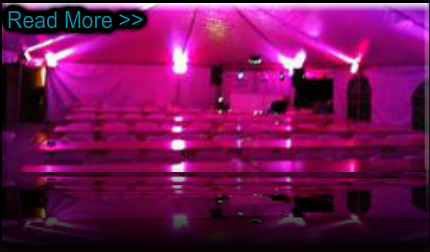

The New Dance Machine
Success Stories
Part of being a professional Wedding DJ service means taking the time to listen to your clients. Through our success stories you will see that is exactly what we do here at TNDM Green Bay DJ service. We take the time to understand just what the client is looking for, and do all we can to make that happen. Please read what people are saying about our service by clicking here.

Why Us
Your business is very important to us here at TNDM (The New Dance Machine). That is why we pride ourselves on providing an affordable Wedding DJ service for the greater Green Bay area. With over 10 years experience, a 60,000 song library, and the areas best sound systems, you can rest assured your looking at the right company for your event. We also look at each event that we DJ independently, and each performance is built from scratch to tailor to the needs of the event.

Our Services
The New Dance Machine offers several different types of DJ services. From spinning the ones and twos at school dances, to transforming wedding venues with our beautiful up-lighting. Our Wedding DJ's are experienced, professional, and set the standard for Green Bay DJ's. Feel free to explore the site, email, or give us a call for more information.
